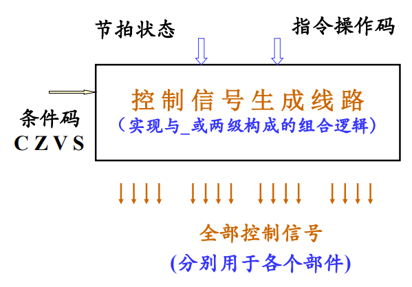

第一单元 计算机组成简述
概述
重点
流水线 《CSAPP》
考点
浮点数表示 Cache 【组成原理和操作系统】 磁表面储存设备 rid 【组成原理和操作系统】 IO + 总线 两种经典计算题
Tips
初试无实验
运行机制
Datapath：完成算数和逻辑运算，包括其中的寄存器 （有些不划分） Control：CPU的组成部分，根据程序指令来指挥datapath，memory和I/O Memory： 存放运行时数据 I/O： 输入输出设备
图灵机
“通用”计算机的概念，形成了“可计算性”的概念
确定型图灵机
- 有穷符号
- 有穷状态类
- 转移函数
数据的表示
UNICODE 编码
16位表示字符。 将编码空间划分为块，每块为16的整数倍，按块进行分配。
UTF-8编码
变长字符编码
二进制浮点数表示法
标准： IEEE 754
原码、反码、补码
反码：按位取反 补码：按位取反，最小部分+1
考法： 给编码，写出原码、反码和补码
补码的性质
- 补码求真值 $$ N = -b_{n-1}\times2^{n-1} + \sum^{n-2}_{i=0}b_i2^i $$
- 求\([-x]_{补}\)： \([x]_{补}\)连同符号位在内，逐位求反，再在最低位加1，即可得到\([-x]_{补}\)
- 补码减法： $$ [x-y]{补} = [x+(-y)] = [x]{补} + [-y] $$
补码的符号位扩展
算数右移，左边补最高位的比特值
大端和小端
【注】：字节的保存位置差异 大端：数据低位保存在内存高位地址 小端：数据低位保存在内存低位地址
检错纠错码
- 编码
- 检查
- 出错后纠正
码距
概念：任意两个合法码之间至少有几个二进制位不同。若码距为1，则任意变化都为合法码，此时无检错能力。 若用4个2进制位表示8种合法状态，可以使另外8种为非法编码。使码距为2，则它就有了发现一位出错的能力。 合理增大码距，能提高发现错误的能力，但表示一定数量的合法码所使用的二进制位数要变多，增加了电子线路的复杂性和数据存储、数据传输的数量。
- 奇偶校验码的码距为2
- 海明码的码距为4
常用检错纠错码
- 奇偶校验码：用于并行数据传送中
- 海明校验码：用于并行数据传送中
- 循环冗余校验码：用于串行数据传送中
奇偶校验位
原理：在k位数据码之外加1位校验位，使k+1位码字中取值为1的位数总保持奇数/偶数 有检查奇数个出错的能力。
海明校验码
用于多位并行数据检错纠错处理。 实现：为 k 个数据位设立 r 个校验位，使 k+r 位的码字同时具有这两个特性：
- 能发现并改正 k+r 位中任何一位出错；
- 能发现 k+r 位中任何二位同时出错，但已无法改正。
考法
- 根据数据写海明码
- 根据海明码判断哪个数据出错
编码方式
- 用 k 个数据位中不同的数据位组合形成每个校验位的值，使任何一个数据位出错将引起 r 个校验位中不同的_校验位组合_发生变化，从而推断出错位。对该位求反则实现纠错。
- 位数 r 和 k 的关系： \(2^r \geq k + r + 1\)，即用 \(2^r\) 个编码分别表示 k 个数据位、 r 个校验位中哪一位出错，都不会错。
- 若令 \(2^{r-1}\geq k+r\)，用 r-1 位校验码位出错位编码，再单独设一位用于区分1位还是2位同时出错，更实用。
实现方法
编码方案：
| P1 | P2 | D1 | P3 | D2 | D3 | P4 |
|---|---|---|---|---|---|---|
| 1 | 2 | 3 | 4 | 5 | 6 | 7 |
一、准备工作：
- 从1—6按次序排列数据位、校验位
- 将校验位P1、P2、P3依次安排再2的幂次方位
- P4为总校验位
二、为各校验位分配数据位组合
- 数据位的编号分别为3、5、6，它们是校验位编号的组合 $$ 3=1+2,\ 5=1+4,\ 6=2+4,\ 7=1+2+4,\ 9=1+8 $$ 如是类推（即二进制编码）
- P1负责对 D1、D2和D4、D5（即第7、9位，若存在的话），P2负责对D1、D3、D4进行校验.如是类推。
三、写出各校验位的编码逻辑表达式：
- $$ P1=D2\oplus D1;\ P2=D3\oplus D1;\ P3=D3\oplus D2 $$ 其中\(\oplus\)表异或运算。
- 用其他各校验位和数据位进行异或运算求校验位\(P4\)的值，用于区分_无错、奇数位错、偶数位错_三种情况。 $$ P4=P1\oplus P2\oplus P3\oplus D3\oplus D2\oplus D1 $$
译码方案
| 无错 | 单独1位错 | 2位同时错 |
|---|---|---|
| 四位译码S1—4全为0 | 若仅D1错，则S4 S3 S2 S1=1011，其中S3 S2 S1不为000，S4必为1 | 若P2 D1错，则 S4 S3 S2 S1=0001，其中 S4 必为0，S3 S2 S1 不为000 |
若一位出错：再根据 S1—4 的错误和它们的译码方案依次确定出错位。 若两位出错：放弃重传。
运算器部件组成及设计
补码
加法运算
符号位和数据位同样计算
减法运算
\([x]_补\)求\([x/2]_补\)
原符号位不变，且符号位与数值位均右移一位
符号位扩展
位数少的补码数符号位想做扩展直至两数位数相同
运算器(ALU)功能和设计
功能
- 完成算术运算、逻辑运算
- 得到运算器结果状态
- 取得操作数——寄存器组（运算器的一部分）、数据总线
- 输出、存放运算结果——寄存器组、数据总线
- 暂存运算的中间结果——Q寄存器、移位寄存器
- 由控制器产生的控制信号驱动
结果标志
-
是否全零： $$ Z = (F1=0)\wedge(F2=0)\wedge(F3=0)\wedge(F4=0) $$
-
最高位： S = 最高位
-
是否溢出： $$ OV = f1'\times f2'\times fs + f1\times f2\times fs' $$
基础逻辑电路
- 逻辑门电路 ——AND、OR
- 加法器——ADD
- 触发器
- 多路选择器、移位器
1位ALU
算术运算
乘法运算（原码）
- 若乘数当前位为1，则将被乘数和部分积求和
- 若乘数当前位为0，则跳过
- 将部分积移位
- 所有位完成后结束
算法实现
部分积寄存器右移，乘数寄存器右移
补码算法
方案一
- 将补码转换为原码并相乘
- 根据两数符号位确定结果符号并转换为补码
算法实现
布斯算法
乘法可以看作的加法和减法的组合。
补码乘法运算
令
则
其中\(y_{-1} = 0\)。 用\(Y\)的值乘\([X]_补\)，达到\([x]_补\)乘\([x]\)补, 求出\([x\times y]_补\)，不必区分符号与数值位。 乘数最低一位之后要补初值为０的一位附加线路，并且每次乘运算需要看附加位和最低位两位取值的不同情况决定如何计算部分积，其规则是：
| 0 0 | +0 |
|---|---|
| 0 1 | +被乘数 |
| 1 0 | -被乘数 |
| 1 1 | +0 |
除法运算
加减交替除法
- 当余数为正时，表示够减，即商上1，在进行下一次商时，将余数(此时为正)左移一位，减去除数。
- 当余数为负时，表示不够减，即商上0，在进行下一次商时，将余数(此时为正)左移一位，加上除数。
- 运算时需要双符号补码，所以应先把给定的定点数转换为补码形式，需要注意的是，除数的负数也要转换为双符号补码，方便后面作减法。因为在计算机中减一个数等于加这个数的负数。而补码正是用来做加减法的。
- 操作的步数n 是由要求的n位商决定的，如果第n步 余数为负，则需增加一步恢复余数，即 +Y ，增加的这一步不移位。

浮点数表示和运算
建议看DOAT并手写10进制转浮点数code
浮点数表示
标准：IEEE754
浮点数：
IEEE标准：
- 阶码使用译码，对规格化数阶码用移127方案
- 尾数用原码，对规格化数的位数用隐藏位技术
- 支持正负无穷大的浮点数
- 设置非法浮点数编码供编程人员排错
| 符号位数 | 阶码位数 | 尾数位数 | 总位数 | |
|---|---|---|---|---|
| 段浮点数： | 1 | 8 | 23 | 32 |
| 长浮点数： | 1 | 11 | 52 | 64 |
隐藏位技术
由于尾数最高位必定为1（否则总可以通过阶码将第一个1移到最高位去），则保存时通过尾数左移将最高位去掉。以此节省空间提高精度。在转换时需要恢复该隐藏位。
阶码的移码表示法
译码：整数补码+偏移值（为了让0值全为0）
{% note info simple %} 当阶码全为0时，尾数的最高位不隐藏，总是置0。此时为非规格化数。 {% endnote %} eg：
| 二进制表示 | 十进制表示 | |
|---|---|---|
| 使用隐藏位 | 0 (0_7)1 (0_23) | \(1.0\times 2^{-126}\) |
| 不使用隐藏位 | 0 (0_8) (0_12)1 | \(2^{-23}\times 2^{-127} = 2^{-150}\) |
单精度浮点数表示：
| 31 | 30——23 | 22——0 |
|---|---|---|
| 符号位 | 阶码 | 尾数 |
| 1 bit | 8 bit | 23 bit |
表示范围：\(2.0\times 10^{-38}\)到\(2.0\times 10^{38}\)
eg：
| S | E | M |
|---|---|---|
| 0 | 01111110 | 00000000000000000000000 |
| \((-1)^S\) | \((-1+127)_2\) | \((1).0\) |
双精度表示
| 符号位 | 阶码 | 尾数 |
|---|---|---|
| 1 bit | 11 bit | 52 bit |
表示范围：\(2.0\times 10^{-108}\)到\(2.0\times 10^{108}\)
单精度浮点数表示值
| S（1位） | E（8位） | M（23位） | X（共32位）-表示值 |
|---|---|---|---|
| 符号位 | 0 | 0 | 0 |
| 符号位 | 0 | 不为0 | \((-1)^S\cdot 2^{-126}\cdot({\color{red}0}.M)\)非规格化数 |
| 符号位 | 1——254之间 | 不为0 | \((-1)^S\cdot 2^{E-127}\cdot({\color{red}1}.M)\) 规格化 |
| 符号位 | 255 | 0 | 无穷大 |
| 符号位 | 255 | 不为0 | NaN（非数值） |
特殊的浮点数值
浮点数的计算
舍入——十进制2二进制转换
- 求出足够多的有效位
- 根据精度要求（单、双）截断多余的位
- 按标准要求给出符号位、阶和有效位
算术运算
加减法
- 对阶操作：求阶差：\(\delta E = M_X-M_Y\)，使阶码小的数尾数右移\(|\delta E|\)位，使其阶码值等于大数的阶码值。
- 尾数加减（注意隐藏位，先恢复并加减后，原码加减转为补码加减）
- 规格化处理
- 舍入操作，可能带来又一次规格化
- 判断溢出
乘除法
相较加减法：
- 乘除法的阶码相加减
- 乘除法的尾码相乘除
特点
浮点数的加减法不满足结合律 浮点数不能进行相等比较（因为舍入）
第二单元 控制器概述
指令和指令系统
概念
指令是计算机运行的最小功能单元，一般是不可中断的（需要区分指令和流水线）。是由多个二进制位组成的位串，是计算机硬件可以直接识别和执行的一个信息体。 计算机的全部指令构成计算机的指令系统。指令规模有限。
地位
指令系统层处于硬件和软件系统之间，是硬、软件之间大抵接口部分。对两部分都有重要影响。 指令系统优劣是一个计算机系统是否成功的关键因素。
设计要求
- 完备性 指令功能齐全、编程方便
- 规整性 指令格式简单、统一
- 高效性 占内存小，运行高效
- 兼容性 同一系列软件兼容
基本指令
| 计算机部件 | 运算器部件 | 控制器部件 | 存储器部件 | 输入设备 | 输出设备 |
|---|---|---|---|---|---|
| 功能 | 数据运算 | 系统指挥控制 | 保存当前程序和数据 | 输入功能 | 输出功能 |
| 需要的指令 | ADD,SUB,AND,OR, MVRR,SHR,RCL |
JUMP,JCR, CALL,RET |
STORE,LOAD, PUSH,POP |
IN | OUT |
其他指令： 置条件码指令、开中断指令、关中断指令、停机指令、空操作指令、特权指令
指令格式
- 指令字： 指令的二进制表示
- 指令字长： 指令字中二进制代码的位数
- 定长指令字结构：IBM360机、THINPAD教学机
- 变长指令字结构：PDP-11计算机、TEC-2000的八位机
- 操作码字段与操作数地址字段有所交叉的方案：MIPS指令系统
- 指令格式： 指令字中操作码和操作数地址的二进制位的分配方案
- 指令操作码 指令完成的运算处理功能和数据类型
- 操作数或指令的地址 指明用到的数据或地址，可能是
- 寄存器变化
- 设备端口地址
- 存储器的单元地址
- 数值
寻址方式
寻址方式指的是确定本条指令的操作数地址及下一条要执行的指令地址的方法。 指令中操作数字段给出的地址称为形式地址，使用形式地址信息并按一定规则计算出来或读操作得到的一个数值才是数据的实际地址。 指令的操作数地址字段，可能要指出：
- 运算器中的累加器的编号或专用寄存器名称（编号）
- 输入/输出指令中用到的 I/O 设备的入出端口地址
- 内存储器的一个存储单元（或 I/O 设备）的地址
立即数寻址
操作数在指令的地址字段部分直接给出。若位数较多，需要用指令的第二个字提供。 不需要再存储器中再取操作数。
直接寻址
指令的地址码字段直接给出所需的操作数（或指令）在存储器中的地址。
寄存器寻址/间接寻址
所需操作数在一个寄存器中，指令的操作数为寄存器编号。 间接寻址：寄存器中存放的是所需操作数在内存储器中所在单元的地址。
变址寻址
操作数的地址由指定的变址寄存器（由Reg指定）的内容和指令中的变址偏移量（Disp）相加得到。 变址寄存器内容变化，变址偏移量不变，便于读写数组中的元素，是计算机中常用的一种寻址方式。此时将基址放在 Disp 中，通过加减寄存器 Reg 来访问数组。
相对寻址
指令的地址由程序计数器 PC 的内容（即当前执行指令的地址）和指令的相对寻址偏移量相加得到。
- 主要用于转移指令，对浮动程序很有用。
- 偏移量可正可负，通常用补码表示。
间接寻址
操作数的内容为操作数地址的地址。需要读两次。
基址寻址
在计算机中设置一个专用的基址寄存器，操作数（或指令）的地址通过基址寄存器的内容和指令中的地址码相加得到。 主要用于为程序或数据分配存储区，对多道程序或浮动程序很有用，解决了程序在存储器中的定位和扩大寻址空间等问题。
堆栈寻址
通过堆栈来获得或存储操作数。
指令系统距离和介绍
指令系统设计的两种思路
RISC (Reduced Instruction Set Computer)
通常称为精简指令系统的计算机。提供数目较少、格式与功能简单、运行高效的指令，追求的是计算机控制器实现简单，运行高速，更容易在单块超大规模集成电路的芯片内制做出来。指令并行性好。
CISC (Complex Instruction Set Computer)
通常称为复杂指令系统的计算机，是相对于RISC一词提出来的。其特点是：指令条数多，格式多样，寻址方式复杂，每条指令的功能强，优点是汇编程序设计容易些，但计算机控制器的实现困难多，很多指令被使用的机会比较少。指令并行度差。
MIPS 指令
指令格式
| 比特数 | 6位 | 5位 | 5位 | 5位 | 5位 | 6位 | 形式 |
| 寄存器型 | op=0 | rs | rt | rd | shamt | funct | R-format |
| 立即数型 | op | rs | rt | address/immediate | I-format | ||
| 转移型 | op | target | J-format | ||||
算术指令
| 指令 | 操作 | 说明 |
|---|---|---|
add $s1,$s2,$s3 |
$1 = $2 + $3 |
寄存器加法 |
sub $1,$2,$3 |
$1=$2-$3 |
寄存器减法 |
addi $1,$2,100 |
$1=$2+100 |
立即数加法 |
addu $1,$2,$3 |
$1=$2+$3 |
无符号数加法 |
subu $1,$2,$3 |
$1=$2-$3 |
无符号数减法 |
addiu $1,$2,100 |
$1=$2+100 |
无符号立即数加法 |
mfco $1,$epc |
$1=$epc |
读取异常 PC |
mult $2,$3 |
Hi,Lo=$2×$3 |
乘法 |
multu $2,$3 |
Hi,Lo=$2×$3 |
无符号数乘法 |
div $2,$3 |
Lo=$2/$3, Hi=$2 mod $3 |
除法 |
divu $2,$3 |
Lo=$2/$3, Hi=$2 mod $3 |
无符号数除法 |
mfhi $1 |
$1=Hi |
从 Hi 中取数据 |
mflo $1 |
$1=Lo |
从 Lo 中取数据 |
逻辑指令
| 指令 | 操作 | 说明 |
|---|---|---|
and $1,$2,$3 |
$1=$2&$3 |
与操作 |
or $1,$2,$3 |
$1=$2\|$3 |
或操作 |
andi $1,$2,100 |
$1=$2&100 |
立即数与操作 |
ori $1,$2,100 |
$1=$2\|100 |
立即数或操作 |
sll $1,$2,10 |
$1=$2<<10 |
逻辑左移 |
srl $1,$2,10 |
$1=$2>>10 |
逻辑右移 |
数据传递指令
| 指令 | 操作 | 说明 |
|---|---|---|
lw $1,100($2) |
$1=M[$2+100] |
装入字 |
sw $1,100($2) |
M[$2+100]=$1 |
存储字 |
lui $1,100 |
$1=100×2 16 |
装入立即数到高位 |
条件转移指令
| 指令 | 操作 | 说明 |
|---|---|---|
beq $1,$2,100 |
if($1==$2) go to PC+4+100 |
相等时转移 |
bne $1,$2,100 |
if($1!=$2) go to PC+4+100 |
不相等时转移 |
slt $1,$2,$3 |
if($2<$3) $1=1;else $1=0 |
小于时置位 |
slti $1,$2,100 |
if($2<100) $1=1;else $1=0 |
小于立即数时置位 |
sltu $1,$2,$3 |
if($2<$3) $1=1;else $1=0 |
小于无符号数时置位 |
sltiu $1,$2,100 |
if($2<100) $1=1;else $1=0 |
无符号数小于立即数时置位 |
无条件转移指令
| 指令 | 操作 | 说明 |
|---|---|---|
j 10000 |
go to 10000 |
转移到 10000 |
jr $31 |
go to $31 |
转移到$31 |
jal 10000 |
$31=PC+4; go to 10000 |
转移并链接 |
特点
- 通用寄存器较多
- 编译系统简单高效
- 容易实现流水操作
- 典型的 RISC 指令集
- 指令长度固定
- 不需要根据当前指令的类型来确定下一条指令的地址
- 只需要对PC增量即可（由于字节对齐，为PC+4）
- 寄存器位置基本固定
- 目的寄存器位置有所变动，但源寄存器位置总是固定的（或不需要）
- 在指令译码完成前就可取操作数（源、目的寄存器）了
指令的执行过程与控制
指令的执行步骤
- 读取指令(LF)： 从存储器读指令并形成下条地址
- 指令译码(ID)： 指令译码，读寄存器堆为 ALU 准备数据
- 执行运算(EXE)： ALU 执行数据运算或计算存储器地址
- 存储器读写(MEM)： 完成存储器的读或写操作
- 写回(WB)： 写 ALU 的结果或存储器读出数据到寄存器堆
CPI: 计算机一条指令的执行时间被称为指令周期，一个CPU时钟时间被称为 CPU周期 (在某些计算机中，还可再把一个CPU周期区分为几个更小的步骤，称其为节拍)。执行每条指令平均使用的 CPU周期个数被称为 CPI
对如何安排这几个阶段有3种可行方案
单周期CPU
全部指令都选用一个 CPU周期完成的系统被称为单周期CPU，指令串行执行，前一条指令结束后才启动下条指令。每条指令都用 5个步骤的时间完成，控制各部件运行的信号在整个指令周期不变化。 单周期CPU 用于早期计算机， 系统性能和资源利用率很低，相对当前技术变得不再实用。
多周期CPU
依据不同指令各自的功能需求为其选择不等的执行步骤的系统被称为多周期CPU 。控制各部件运行的控制信号随着指令执行步骤改变，系统性能和资源利用率更高。相邻指令可以完全串行执行，也可能部分时间重叠。 多周期CPU（相比单周期CPU）更实用。
指令流水线CPU
全部指令都是选用5个步骤完成，执行时间相同,但相邻指令的执行并不是完全串行的，执行时间有所重叠。例如每结束指令的一个执行步骤就启动下条指令，这被称为指令流水线技术。 所有部件都高速运行，尖峰速度每个 CPU时钟执行一条指令，系统性能和资源利用率更高，显著地提高系统的性能价格比，但计算机结构和控制器的设计、实现略显复杂。当前计算机中普遍使用这种方案。
单周期 CPU 控制器设计
主要问题
- 数据通路设计
- 控制信号设计
- 执行时序设计
设计思路
指令的执行
- 设计时序逻辑电路
- 一条指令用一个 CPU 周期完成
执行步骤的实现
- 取指：从指令存储器种读指令 （地址：PC）
- 译码：读出一或两个源寄存器的值（寄存器组）
- 运算：进行指令规定的运算（ALU）
- 访存：读/写数据存储器
- 写回：将结果写入目的寄存器
需要保存的值：
PC、寄存器组、存储器
逻辑部件
ADDer、MUX、ALU、Selector|Controller
D触发器
时钟上升沿写入数据，一直保留到下一次上升沿。下降沿输出数据
存储器
读/写操作
寄存器组
- 三次操作：读两个源地址，输出一个目标地址
- 输入：地址、写入数据、写信号
- 输出：写信号
- 每个时钟周期可以完成3次访问
设计
取指
Instr = MEM[PC]- 从存储器中读出指令
- 给地址，一定时间延迟后，存储器输出当前指令
- 修改 PC，使其指向下一条指令（PC+4）
R型指令
| 寄存器型 | op=0 | rs | rt | rd | shamt | funct | R-format |
算术指令：
addu rd rs rtsubu rd rs rt- \(\text{R[rd]} \leftarrow \text{R[rs]}\ \text{op}\ \text{R[rt]}\)
- 通过指令译码得到
- ALU 功能码
ALUOp - 写寄存器控制信号
RegWrite允许写入 - 根据指令格式，从指令字段中得到寄存器地址

I型指令
| 立即数型 | op | rs | rt | address/immediate | I-format |
Ori 指令
ori rt rs imm- \(\text{R[rd]} \leftarrow \text{R[rs]}\ \text{or}\ \text{ZeroExt(imm)}\)
- 目的寄存器有变化
将 Datapath 扩展以实现立即数型指令
- 立即数字段要零扩展或符号扩展
ALUOpALUSrc：寄存器/立即数
Load 指令
lw rt,rs,imm
- 增加符号扩展和零扩展选择
- 增加读数据存储器的通路
- 增加 ALU 输出结果和数据存储器输出的选择通路
Store指令
sw rt, rs, imm- 相比Load指令：
- 增加读出数据2到数据存储器的通道
- 增加写存储器的控制信号
Beq指令
beq rs,rt,imm- 改变 PC 的值
J型指令
| 转移型 | op | target | J-format | ||||
- Jump指令：
j target - \(\text{PC[31:0]}\leftarrow\text{PC[31:28]}\ ||\ \text{target[25:0]}\ ||\ 00\)
控制信号表
分级控制
- 只有ALU需要 Func 字段，在 ALU 处进行译码
完整的单周期CPU
需要注意时序控制的时隙，确保每条指令可以完成。
优点：
- 买条指令占用一个时钟周期
- 逻辑设计简单，时需设计也简单
缺点：
- 各组成部件的利用率不高（3个ALU无法复用）
- 时钟周期应满足执行时间最长指令的要求
- CPI=1
多周期CPU设计
- 将指令执行过程分解为多个步骤
- 每条指令占用它需要的步骤数
- 每个步骤占用一个时钟周期
- 尽量平衡各步骤间的延迟
- 尽量限制每个步骤使用单一的主要部件
- 控制器仅需提供当前步骤所需要的控制信号
- 前提
- 保存好下一步骤需要的值
- 引入“新”的内部寄存器
- 转到下一步骤执行
- 引入状态标记当前步骤
- 有限自动机
控制器的组成
- 程序计数器PC 存放指令地址，有增量和接收新值功能
- 指令寄存器IR 存放指令内容：操作码或操作数/地址
- 指令执行步骤标记线路 指明每条指令的执行步骤和相对次序关系
- 控制信号产生线路 向计算机各功能部件提供协调运行每一个步骤所需要的控制信号。
根据指令步骤标记线路和控制信号产生线路不同的组成和不同的运行原理，有两种不同类型的控制器：
- 硬连线控制器(组合逻辑控制器)： 采用组合逻辑线路、依据指令及其执行步骤直接产生控制信号。
- 微程序控制器： 采用存储器电路把控制信号存储起来，依据指令执行的步骤读出要用到的信号组合。
硬连线控制器
节拍：相当于状态机，用于控制状态的转换。
硬连线控制器由程序计数器PC、指令寄存器IR、 节拍发生器Timer 和 控制信号产生部件 4 部分组成。
- PC：用于提供待读出指令在主存储器中的地址
- IR： 用于保存从主存储器中读出的指令内容
- Timer： 用于给出并维护指令执行步骤的编码
- 控制信号产生部件： 用于依据指令内容（在IR中）和指令执行所处的操作步骤（Timer 提供），用组合逻辑线路产生计算机本操作步骤中各个部件所需要的控制信号。

微程序控制器
- 采用控制存储器存储每条指令的每个执行步骤所需要的全部控制信号
- 用微地址进行访问，读出控制信号并输出
- 采用下地址逻辑实现执行步骤之间的衔接
- 根据指令操作码映射出该指令的首条微指令的地址
- 每条微指令给出其下一步骤的微地址
指令扩展时不需要更改电路，只用更改微程序控制器的代码即可。
多周期CPU控制器设计
- 确定数据通路
- 划分指令执行步骤
- 指令流程图
- 安排每条指令每个步骤的功能，并给出相应的控制信号
- 指令流程表
- 为指令执行步骤设计状态机
- 为每个步骤的控制信号设计控制信号生成逻辑
多周期CPU的Datapath
MIPS计算机硬件组成

控制部件
控制器由节拍发生器和控制信号产生线路 组成，分别完成标明指令执行步骤和向各个部件提供控制信号的功能。
存储器
存储器既存指令又存数据。 读指令时由 PC 提供地址，读出的指令保存到 IR；读写数据时由结果寄存器提供地址，读操作的读出数据保存到DR，写操作的写入数据由B寄存器给出。
寄存器堆
寄存器堆由32个寄存器组成，可以用N1(rs)、N2(rt)同时读出两个寄存器的内容，分别存于A、B寄存器, 可以用 ND (rd 或 rt ) 把 DI 端的数据写入,被写入数据来自 结果寄存器 或 DR。
ALU
ALU 完成算术和逻辑运算，两路输入分别为A 和 B，其中A路输入可选择 A寄存器或 PC，B路输入可选择B寄存器或常数4、IR.immediate 经符号扩展或扩展后又左移两位的值。
执行步骤
| 寄存器型 | op=0 | rs | rt | rd | shamt | funct | R-format |
| 立即数型 | op | rs | rt | address/immediate | I-format | ||
| 转移型 | op | target | J-format | ||||
取址：1步完成。取址之后：
- J 型指令：用 PC 高4位 拼接 Target 可以只经过1步完成,
- 相对转移 (I型) 指令：经读寄存器堆、ALU运算可2步完成
- R 型指令经读寄存器堆、ALU运算和结果写回可3步完成
- 读内存指令：经读寄存器堆、ALU算地址、读内存数据到 DR、把 DR内容写入寄存器堆可4步完成
指令流程图
sequenceDiagram
participant A as 取址周期(Sif)
participant B as 译码周期(Sid)
participant C as 执行周期(Sexe)
participant D as 访存周期(Smem)
participant E as 写回周期(Swb)
A ->> B:
B -->> A: J指令
B ->> C: 非J指令
C -->> A: Branch 指令
C ->> D: SW/LW指令
D --> A: SW指令
C ->> E: 非Branch/SW/LW指令
D ->> E: LW指令
E -->> A:
指令流程表
| 执行步骤 | 读取指令 | 指令译码 | 执行运算 | 内存读写 | 数据写回 |
| J 指令 | |||||
| Branch 型 | 若条件成立则 | ||||
| R 类型 | |||||
| Sw 类型 | |||||
| Lw |
流水线技术概述
流水线的特性
- 流水线并没有缩短单个任务的延迟，但提高了整个系统的吞吐率。
- 多个任务同时运行，占用不同的资源。
- 可能的加速比 = 流水段数
- 流水线效率受限于用时最长的阶段
- 若每个阶段的用时不同，将降低流水线效率
- 装入和排空流水线也可降低加速比
- 冲突将引起流水线的暂停
流水线概念
处理机内部的并行性
- 空间并行性： 即在一个处理机内设置多个独立的操作部件，并且使这些部件并行工作。
- 时间并行性， 就是采用流水线技术。流水线技术是一种非常经济、对提高计算机的运算速度非常有效的技术。采用流水线技术只需增加少量硬件就能把计算机的运算速度提高几倍，成为计算机中普遍使用的一种并行处理技术。
计算机流水线技术
- 指令流水线：指令的执行过程采用流水线
- 操作部件流水线：运算器中的操作部件，如浮点加法器、浮点乘法器等可以采用流水线
- 宏流水线：多个计算机之间，通过存储器连接，可以采用流水线
流水线的表示
连接图表示法
时空图表示法
流水线的分类
部件功能极流水线
所谓功能部件级流水线也可以称为运算操作流水线（Arithmetic Pipelines）。浮点加法器就是一种典型的功能部件级流水线。
处理机级流水线
所谓处理机级流水线，又叫指令流水线（Instruction Pipelines），它是把解释指令的过程按照流水方式处理，使处理机能够重叠地解释多条指令。
处理机间级流水线
所谓处理机间流水线，又被称为宏流水线（Macro Pipelines）。这种流水线由两个或者两个以上的处理机通过存储器串行连接起来，每个处理机完成整个任务的一部分。
流水线的特点
- 把一个任务（一条指令或一个操作）分解为几个有联系的子任务，每个子任务由一个专门的功能部件来实现。
- 流水线每一个功能段部件后面都要有一个缓冲寄存器，或称为锁存器，其作用是保存本流水段的结果。
- 流水线中各功能段的时间应尽量相等，否则将引起堵塞、断流。要求流水线的时钟周期不能短于最慢的流水段
- 只有连续不断地提供同一种任务时才能发挥流水线的效率，所以在流水线中处理的必须是连续任务。
- 流水线需要有装入时间和排空时间。装入时间是指第一个任务进入流水线到输出流水线的时间。排空时间是指第n个（最后一个）任务进入流水线到输出流水线的时间。
MIPS指令的流水实现
指令执行步骤
- 取指令（IF）
- 指令译码（ID/RF）
- 指令执行（EXE）
- 读存储器（MEM）
- 写回（WB）
各步骤占用的资源
- IF：IM、PC、总线
- ID/RF：寄存器组、控制信号生成部件
- EXE：ALU
- MEM：DM、总线
- WB：寄存器组
流水线的实现
- 在流水线的各个流水段之间加入被称为流水线寄存器（流水线锁存器）的寄存器堆，并在这些寄存器堆上标明所连接的流水段。
- 所有用于在同一条指令的各个时钟周期之间保存临时数据的寄存器，都归入流水线寄存器这一类中。
- 流水线寄存器保存着从一个流水段传送到下一个流水段的所有数据和控制信息。
- PC值多路选择器被放到IF段，这样做的目的是保证对PC值的写操作只出现在一个流水段内，否则当分支转移成功的时候，流水线中两条指令都试图在不同的流水段修改PC值，从而发生写冲突。
- 每个时刻，每条指令都只在一个流水段上是活动的，因此，任何指令所作的任何动作都发生在一对流水线寄存器之间，具体操作由指令类型决定。
- 每一个时钟周期启动一条新的指令，每一个时钟周期就是流水线的一个流水段。每一条指令经过5个时钟周期执行完成，而在每一个时钟周期内，硬件将启动一条新的指令，并执行5条不同指令的某个部分。
流水线的数据通路
各阶段寄存器保存的值
- IF/ID
- PC+4
- IR
- ID/EXE
- A、B、imm、PC+4、func
- rt/rd
- EXE/MEM
- 运算结果：PC、ALU结果、结果状态
- 中间结果：B、目的寄存器
- MEM/WB
- 目的寄存器、ALU结果、存储器读出的结果
指令系统的配合
- 指令字长
- 简化了流水的实现
- 指令格式
- 使访问寄存器组的操作可以尽早开始
- 访存方式
- 其他指令不需要在进行运算前计算存储器地址
- 地址计算完成后可以直接访问存储器
- 数据对齐
- 一次访存可得到一个完整的字
流水线的控制
- 让控制信号也和数据一样流动起来
- 为了区分起见，可以把控制信号前面加上标记，如_IF等
- 每个时钟周期往下一步骤传递控制信号
- 使正确的控制信号到达正确的位置
结构冲突和数据冲突
流水线的资源冲突
- 分开的指令存储器（IM）和数据存储器（DM）
- 在两个流水线段都使用了寄存器：ID段读，WB段写
- 没有考虑PC的问题，流水要求IF段要形成新的PC值（也要考虑跳转命令）
冲突类型
- 结构冲突 指令在重叠执行的过程中，硬件资源满足不了指令重叠执行的要求，发生硬件资源冲突而产生的冲突。
- 数据冲突 是指在同时重叠执行的几条指令中，一条指令依赖于前面指令执行结果数据，但是又在指定位置得不到时发生的冲突。
- 控制冲突 是指流水线中的分支指令或者其他需要改写PC的指令造成的冲突。
结构冲突和相应解决方法
暂停周期
消除结构冲突的最简单方法就是引入暂停周期，这必然要降低流水线的性能。

资源充分重复设置
存储器争用
- 若指令和数据放在同一个存储器，可使用双端口存储器，其中一个端口存取数据，另一个端口取指令
- 设置两个存储器，其中一个作为数据存储器，另一个作为指令存储器
数据冲突和相应解决方法
流水线技术可以通过指令的重叠执行来改变指令的相对执行时间，这就可能导致流水线中的指令序列读写操作数的顺序发生改变，而不同于非流水线时的指令序列读写操作数的顺序。
冲突分类
写后读冲突 (RAW: Read After Write)
指令j的执行需要使用指令i的计算结果，但是当它们在流水线中重叠执行时，指令j可能在指令i将其计算结果写入之前就先行对保存该计算结果的寄存器进行了读操作，这样指令j读出的寄存器值就是错误的。
写后写冲突 (WAW: Write After Write)
指令j和指令i的目的操作数相同，但是当它们在流水线中重叠执行时，指令j可能在指令i将其计算结果写入之前就先行对保存该计算结果的寄存器进行了写操作，这样就导致了寄存器写入顺序的错误，此时，目的寄存器的内容是指令i写入的值，而不是指令j写入的值。 MIPS流水线只会在WB阶段写回寄存器，不会面临这种情况。但多发射、乱序执行可能会遇到这种情况。
读后写冲突 (WAR: Write After Read)
指令j可能在指令i读取某个源寄存器的内容之前就对该寄存器进行了写操作，结果就是导致了指令i后来读取的值是错误的。 MIPS流水线在ID段完成所有的读操作，而在WB段完成所有的写操作，故不会遇到这种情况。
解决方案
旁路（定向）技术 ——R型
将结果尽快传送到需要使用它的位置。
 ALU 的运算结果和 MEM/WB写入结果需要作为 ALU的运算输入，并由 Forwarding Unit 控制信号控制。
ALU 的运算结果和 MEM/WB写入结果需要作为 ALU的运算输入，并由 Forwarding Unit 控制信号控制。
检测数据冲突
- 数据冲突的类型
- EXE 段冲突
- MEM 段冲突
- EXE 段数据冲突
- 检测点：本条指令的源寄存器之一和上一条指令的目的寄存器相同
- 上一条指令需要改写目的寄存器（需要将Rs保存在ID/EX段），且不是0寄存器。
EX/MEM.RegWriteANDEX/MEM.RegisterRd != 0ANDEX/MEM.RegisterRd = ID/EX.RegisterReadRs(Rt)
暂停流水线
- 暂停流水线一个时钟
- 让当前指令的控制信号全部为0，即不进行任何写入操作
- 让 PC 值保持不变
- 让 IF/ID 段寄存器保持不变
- 将 LW 指令的结果通过旁路送到 ALU 输入端

检测
检测点：指令译码阶段 检测条件：
- 上一条指令是 Load 指令 （特征：MemRead 控制信号）
- 它的写入寄存器和当前指令的某一源寄存器相同
ID/EX.MemReadAND (ID/EX.RegisterRt = IF/ID.RegisterRsORID/EX.RegisterRt = IF/ID.RegisterRt
动态调度
- 这种方法是由硬件动态调整指令执行顺序以减少暂停的影响，能够简化编译器设计
- 动态调度并不能真正消除数据冲突，但它能在出现数据冲突时尽量避免出现处理器暂停。而静态调度方法则是尽量通过分离有冲突问题的指令使它们不会导致冲突，从而减少暂停的影响。
- 动态调度的主要思想： 指令顺序发射——乱序执行——指令乱序流出
- 动态调度的问题：异常处理的不精确性。在采用动态调度方法的处理机中，在某条指令产生异常情况时，有可能出现其后面的指令已经执行完成的情况，这样异常处理是不精确的。
控制冲突和异常
流水线的控制冲突是因为程序执行转移类指令而引起的冲突。转移类指令如无条件转移、条件转移、子程序调用、中断等，它们属于分支指令，执行中可能改变程序的方向，从而造成流水线断流。 数据冲突影响到的仅仅是本条指令附近少数几条指令，所以称为局部冲突。而控制冲突影响的范围要大得多，它会引起程序执行方向的改变，使流水线损失更多的性能，所以称为全局冲突。 控制冲突会使流水线的连续流动受到破坏。当执行条件转移指令时，有两种可能结果：
- 如发生转移，将程序计数器PC的内容改变成转移目标地址；
- 如不发生转移，只将PC加上一个增量，指向下一条指令的地址。
引发的冲突
- 数据冲突
- 由于寄存器数据的缺失引发
- 控制冲突
- 由于PC的缺失引发
- 条件转移和无条件转移指令
- 控制冲突对性能影响更大，会暂停流水线一到两个周期
- IF在指令流水的第一阶段，要使用PC
- 对转移指令，至少要到ID阶段才能得到正确的PC
控制冲突的处理
- 暂停流水线
- 直到得到了正确的转移地址
- 造成了性能的降低
- 预测分支
- 预测分支不成功
- 顺序执行下一条指令
- 预测失败后要清除错误启动的指令
- 预测分支成功
- 更复杂一些，因为要计算转移目的地址
- 预测失败后要清除错误启动的指令
- 动态预测
- 硬件根据上次分支的结果进行本次预测
- 编译器处理
- 延迟槽（空操作指令，跟在转移指令之后）